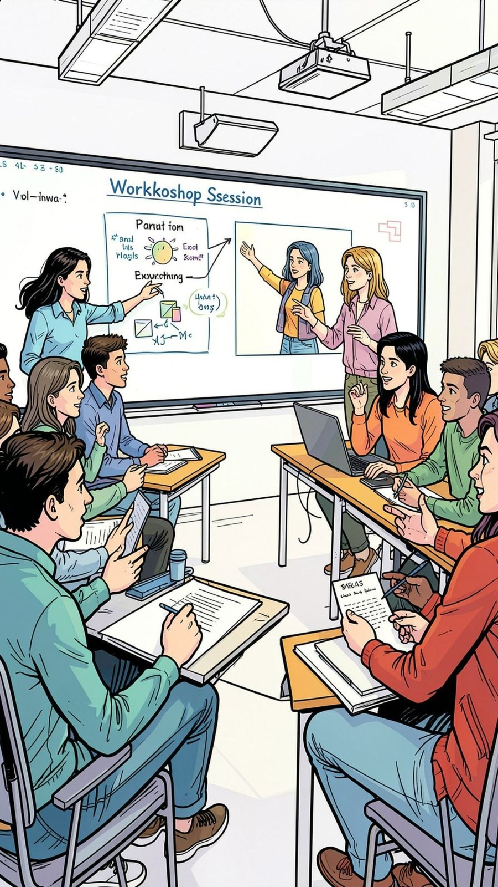
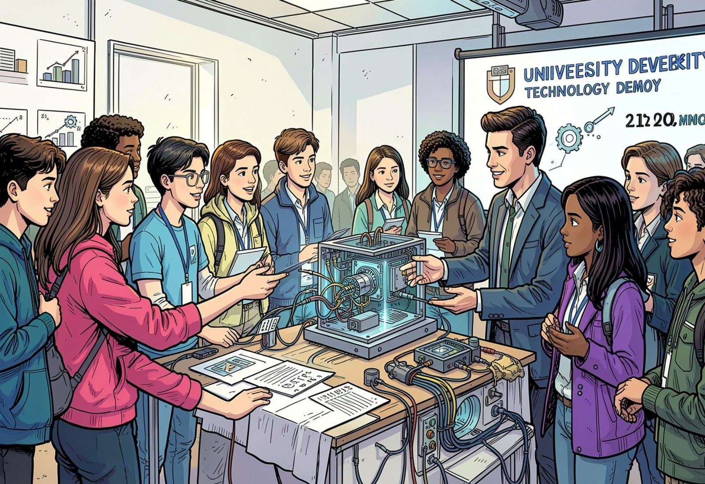

Universidad Católica de Cuyo · Observatorio de Inteligencia Artificial
Semillero de
Inteligencia Artificial
SIA-UCCuyo · ciclo 2026
Formás, investigás y transformás ideas en prototipos reales, con mentoría y ética incluida. Gratuito, voluntario y abierto a todas las carreras y sedes.
Sin examen de código
Nivel I desde cero
Equipos mixtos
Certifica el Observatorio
Personas
Equipo ejecutivo
El Observatorio está dirigido por Claudio Larrea Arnau y cuenta con un equipo interdisciplinario orientado a investigación, formación y vinculación institucional en inteligencia artificial. Consultas: observatorioia@uccuyo.edu.ar. Ver ficha en el Observatorio de IA.
Identidad
Qué es el Semillero
Programa institucional permanente del Observatorio de IA. Tres pilares juntos: capacitación, proyectos reales y comunidad.
Misión
Identificar, formar y acompañar a estudiantes de todas las carreras para que pasen de una idea —aunque sea inicial— a un prototipo con IA responsable, mentoría y certificación institucional.
Visión
Que cada unidad académica de la UCCuyo tenga equipos estudiantiles capaces de resolver problemas reales de su disciplina con inteligencia artificial ética, interdisciplinaria y orientada al bien común.
Capacitación
Bootcamps, talleres y ética de la IA. El Nivel I no exige saber programar.
Proyectos
El corazón del trayecto: un problema real de tu campo, de la Universidad o de la comunidad.
Comunidad
Mentores, mesas de trabajo y Demo Days ante docentes y expertos.
Indicadores
El Semillero en números
Cifras verificables del programa y del alcance de las visitas: provincia, región, país y mundo. Algunas se actualizan solas. No se guarda la IP.
6Inscriptos en el primer corte
6Líneas estratégicas
5Niveles de formación
0Visitas en el mundo
San Luis
Sede del Semillero. Visitas estimadas con origen en la provincia.
0Visitas desde la provincia
1Provincia sede
Cuyo
San Luis, San Juan y Mendoza: la región de la UCCuyo.
0Visitas desde Cuyo
0Provincias de Cuyo con visitas
3Provincias de la región
Argentina
Alcance nacional del mapa de visitas del Semillero.
0Visitas desde el país
0Provincias / regiones con visitas
Mundo
Todas las visitas registradas en el mapa, de cualquier país.
0Visitas con origen
0Países
0Provincias / regiones
Ritmo del Semillero: convocatoria abierta, formación en cinco niveles y un prototipo por trayecto.
Trayecto
Cinco niveles. Entrás en el I.
Avanzás según tu proyecto, no según el año de la carrera.
I
Introducción
Fundamentos, IA generativa, prompts, datos y ética. Pensado para quien arranca.
II
Desarrollo
Python, APIs, agentes, automatización y también plataformas no-code / low-code.
III
Investigación
Metodología, revisión sistemática, validación, estadística y redacción científica.
IV
Transferencia
Design Thinking, prototipos, propiedad intelectual y vínculo con el medio.
V
Liderazgo
Gestión de equipos, congresos, redes y mentoría a nuevos integrantes.
Cómo se selecciona
- Interés real por trabajar con IA, no un CV perfecto.
- Motivación: por qué te importa el problema.
- Disponibilidad para talleres, mesas y el proyecto.
- Potencial: la idea puede ser simple.
Convocatoria 2026
Tu lugar en el Semillero está abierto
Estudiantes regulares de pregrado, grado y posgrado, de cualquier carrera y sede. Becarios de investigación y graduados recientes invitados.
Gratuito y voluntario
Entrá por interés y compromiso. No hay examen de programación.
Todas las facultades
Derecho, salud, económicas, educación, ingeniería, teología: la IA se aplica a tu disciplina.
Idea inicial alcanza
Si todavía no tenés proyecto, lo definís con tu mentor en la inducción.
Plan estratégico
Seis líneas de trabajo
Tu idea entra si resuelve un problema real con IA responsable.
Investigación científica
Búsqueda, revisión, datos, minería de textos y redacción asistida con criterio.
Aplicaciones inteligentes
Chatbots, agentes, automatizaciones, predicción y sistemas expertos.
Ciencia de datos
Captura, análisis, visualización y analítica predictiva.
Desarrollo productivo
Agro, ambiente, industria, logística, salud, gestión y territorio.
Ética y gobernanza
Derechos digitales, sesgos, privacidad, regulación y transparencia.
Innovación y emprendimiento
Prototipos, transferencia, propiedad intelectual y base tecnológica.
Puertas abiertas
Visitas al Semillero
Al abrir esta sección se suma 1 al contador. El origen se estima por la red y, si hace falta, por la zona horaria del dispositivo; no se guarda la IP. El ranking solo muestra orígenes georreferenciados.
0
Contador de visitas
0
Mensajes en el libro
El origen se estima con varios servicios de red y, si la red no informa ciudad o provincia, con la zona horaria del dispositivo. VPN, redes móviles y campus pueden desplazar la ubicación. El ranking no incluye visitas sin georreferencia. No se almacena la IP.
Países
Provincias y regiones por país
Libro de visitas (opcional)
El mensaje se publica acá abajo, en esta misma página, para que lo lea cualquiera que entre. Bastan institución y texto. No se publica el nombre ni el correo.
Mensajes publicados (se leen acá)
Comunidad
Galería
Registro de encuentros, talleres y actividades del Observatorio y del Semillero.


Contacto
Escribinos
Consultas, propuestas de colaboración o pedidos de visita. Se abre tu correo con el destinatario ya cargado.
Observatorio de IA
observatorioia@uccuyo.edu.ar
Secretaría de Investigación y Vinculación Tecnológica · Universidad Católica de Cuyo
También en el Observatorio
Jornadas de IA, webinars, biblioteca, encuestas e informes viven en el sitio institucional del Observatorio. Este portal es la puerta del Semillero.